ICE System Quality Control Handbook
This handbook is intended as a companion book, providing dia- grams for easier identification of the steps in the QC process. Please follow the instructions as written on screen, and refer to these pages as needed
- Authors:
JF Cliche, Antoine Parise
MGADC08 - CHIME Mezzanine
TODO
MGK7MB - ICE Motherboard

Motherboard
Inspection Test
Step 1: Is the FPGA heatsink securely attached? Step 2: Are the FPGA heatsink pins cut near the stiffener?

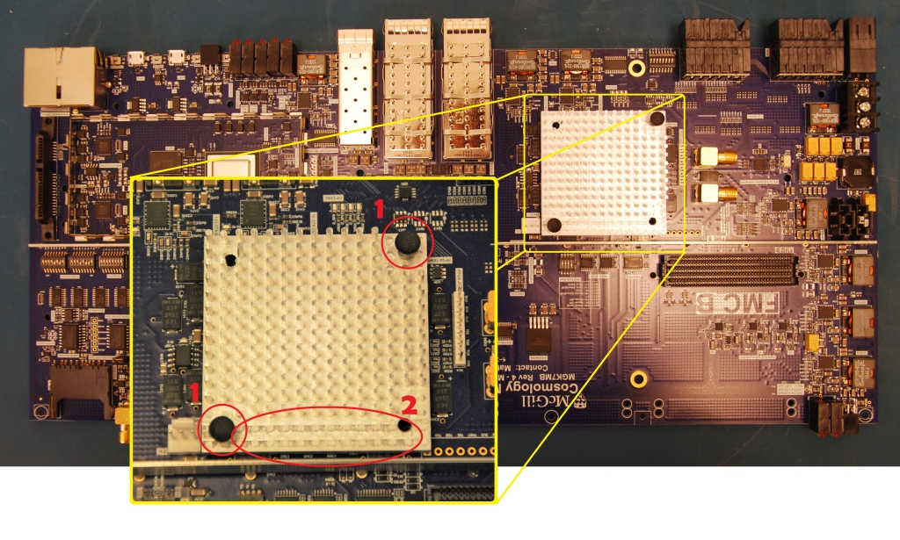
Points of interest for Steps 1 and 2
Step 3: Is the board stiffener installed, and the board reasonably flat? Step 4: Are the PLL heatsinks attached? Step 5: Does the arm shield fence look straight?

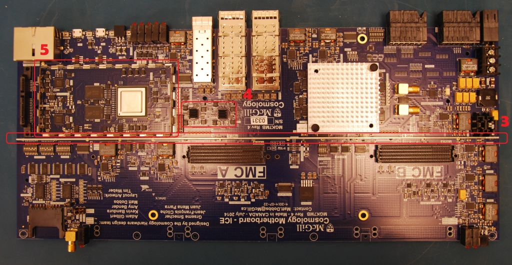
Points of interest for Steps 3,4 and 5
Step 6: Are the dipswitches set correctly? Step 7: Are the jumpers set correctly?

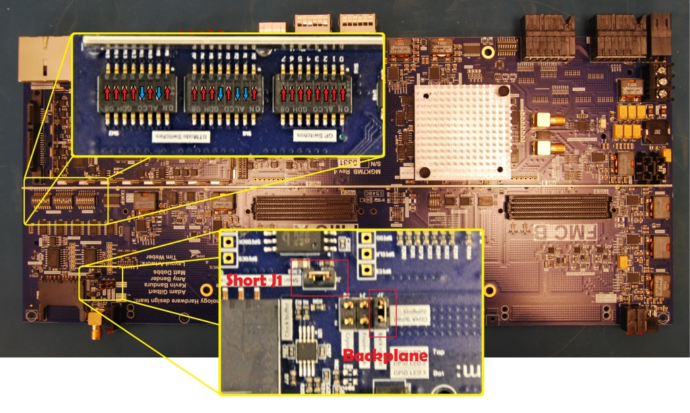
Front of the ICE board
Step 8: Are the 90 pin Molex backplane connectors screwed down? (back- side) Step 9: Are the QSFP and SFP connectors soldered in place? (backside) Step 10: Do all the buck converters have the additional hand-soldered ca- pacitor? (backside)

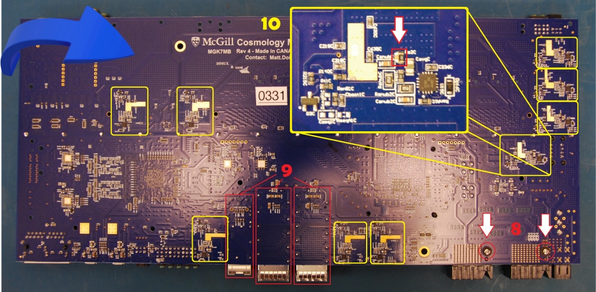
Step 11: Do all the FMC power switches look well soldered? Step 12: Is the blue patch wire in place and secured?

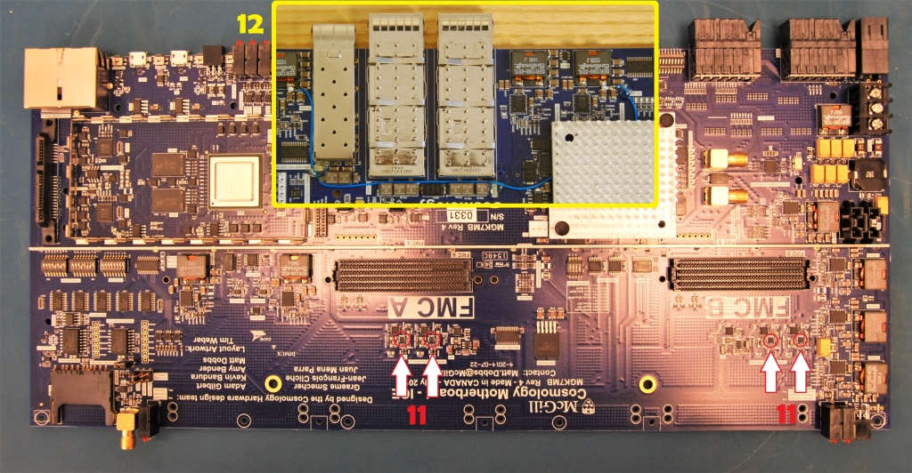
Impedance test
Before taking measurements, make sure that the board setup is as shown in figure 16.

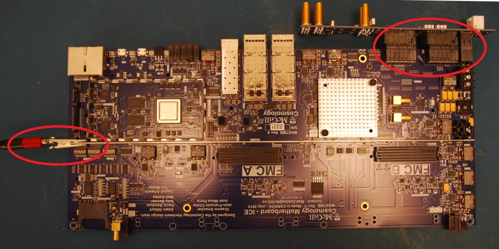
Figure 16: Iceboard with ground connection and one-slot backplane
Apply the red test probe to the test points in the following order: +V supply followed by the buck converters in a counter clockwise order - see figure 17. Refer to probe location 10 in the diagram for instructions on where to apply the test probe for all buck converters.

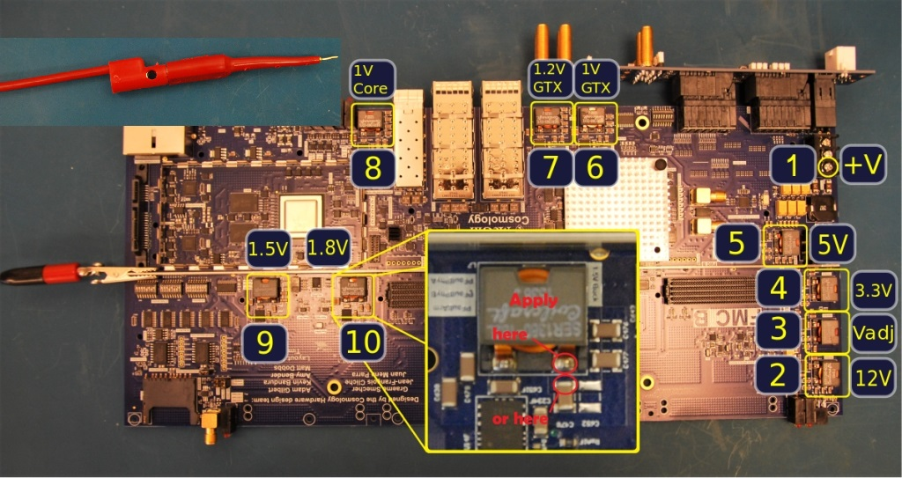
Figure 17: Impedance measurement test locations
Power test
Connect the power cable to the backplane as shown in figure 18.

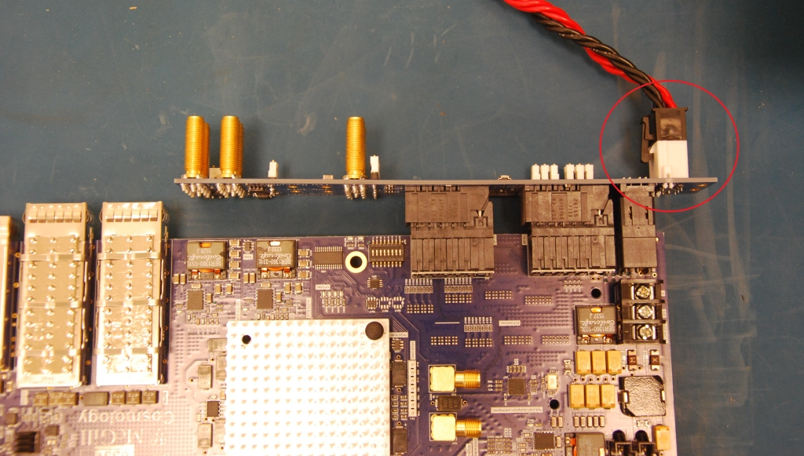
Figure 18: Power cable attached to one-slot backplane with motherboard
Check that all 9 power LEDs are turned on as shown in figure 19.

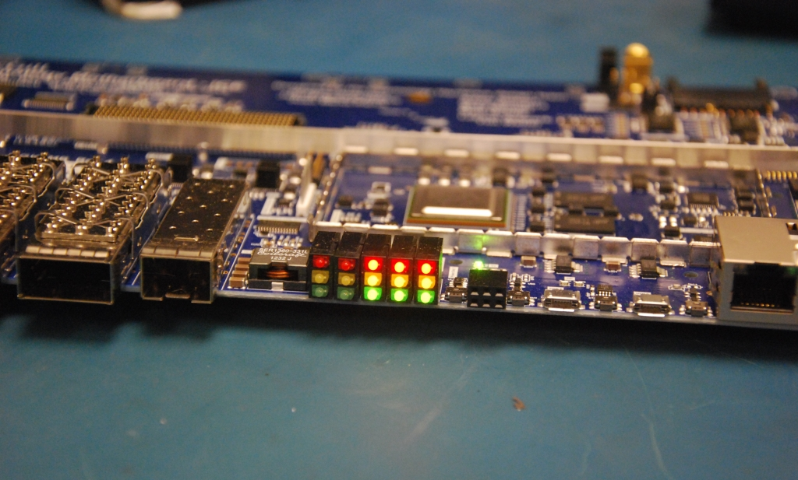
Figure 19: Motherboards 9 power LEDS
PLL programming
Connect the PLL programming cable to the board, making sure that the black marked side faces the SFP connectors - see figure 20.

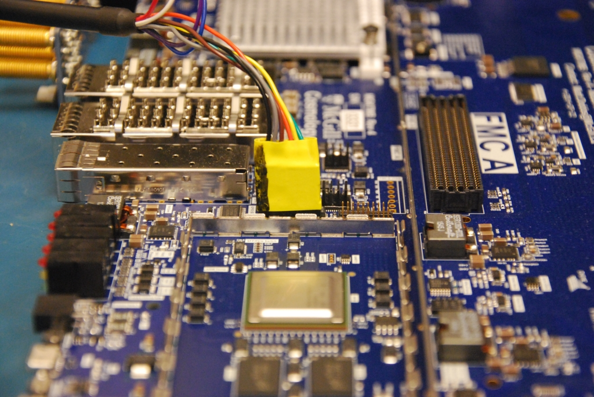
Figure 20: PLL Programming dongle
Check that both PLL lock lights are turned on (green & yellow on the right) see figure 21

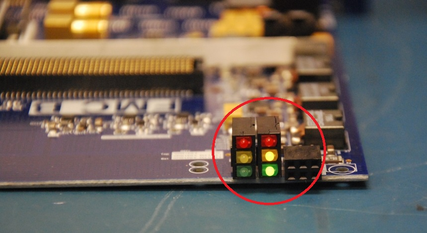
Figure 21: PLL Lock LEDs